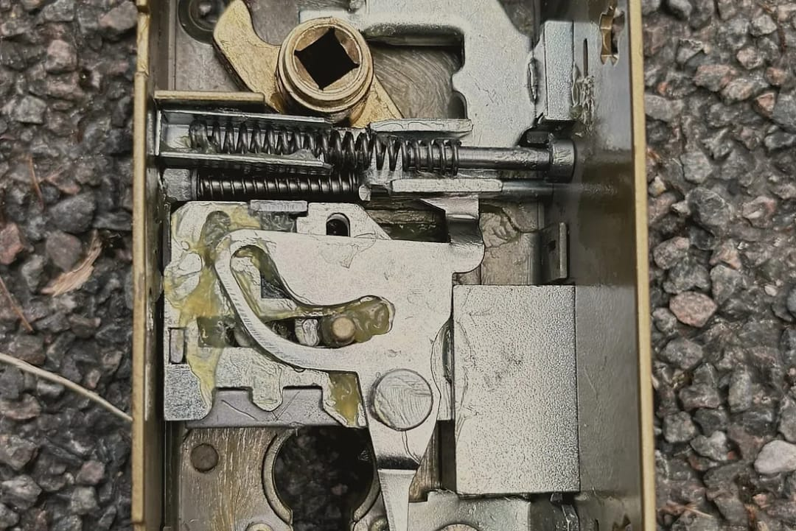
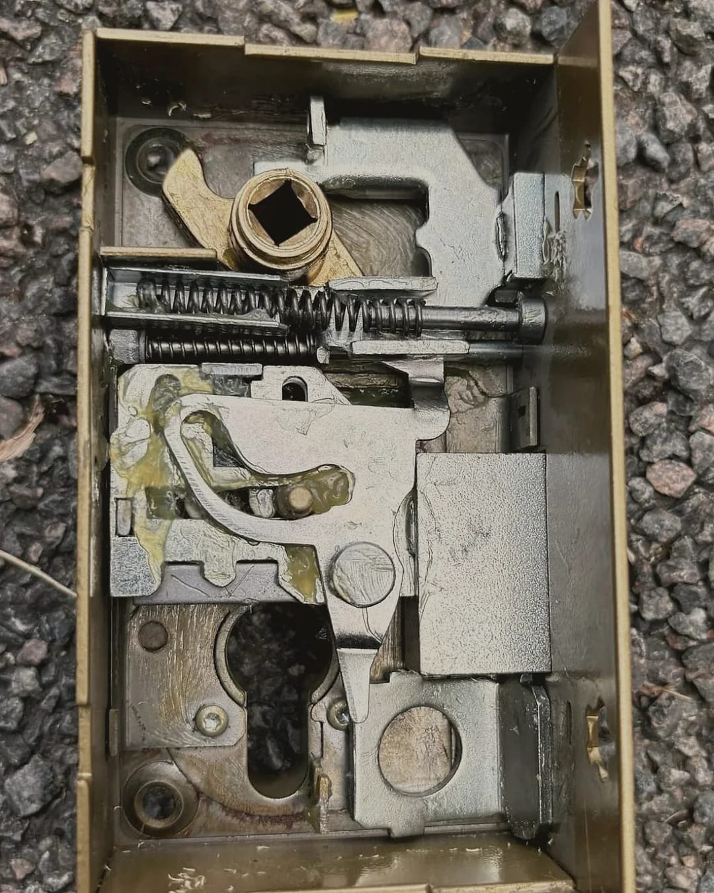
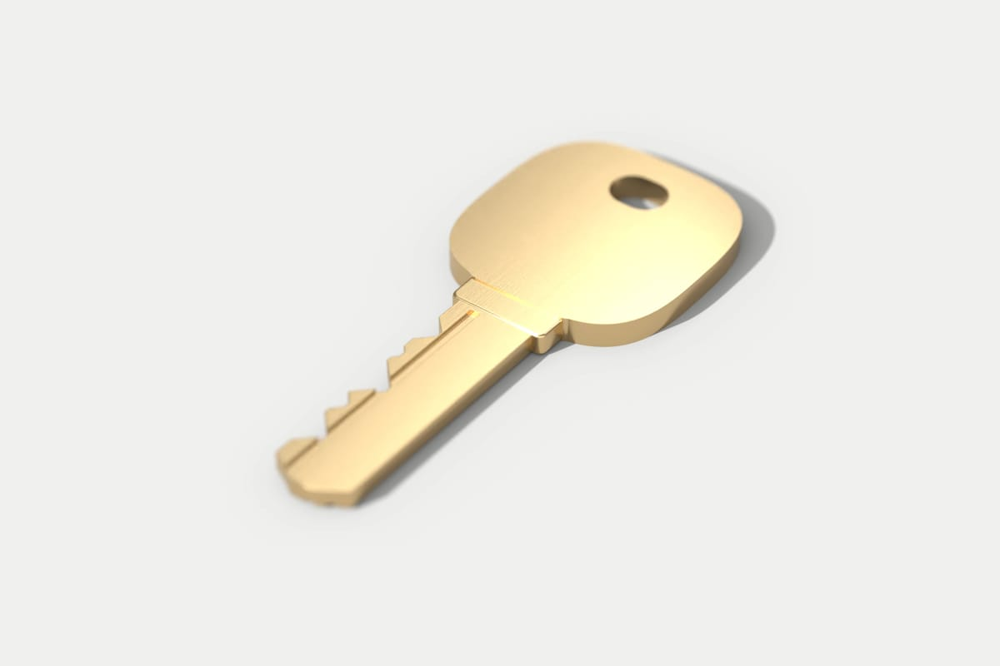

Porte claquée : on vient l’ouvrir
De jour comme de nuit, tous les jours.
On décroche jour et nuit, tous les jours. De 21 h à 6 h, à partir de 95 € TTC. En journée :
À partir de 75 € TTC
Il est et on décroche. Prix de départ : Il est et on décroche. Prix de départ :Avant que le serrurier se mette en route, on vous dit par appel ou par SMS qui vient et le prix de départ.
Vous savez qui vient et à partir de combien avant qu’il prenne la route, et le prix exact avant qu’il touche à la porte.
En attendant le serrurier
Appelez d’abord le 18 ou le 112 si une personne fragile ou un enfant est enfermé seul à l’intérieur, ou si une casserole est restée sur le feu. Vous nous appellerez ensuite.
- Ne forcez rien. Une serrure abîmée coûte plus cher à ouvrir.
- Demandez au gardien ou à un proche s’il a un double de vos clés.
- Le serrurier vous appelle avant d’arriver : gardez un peu de batterie.
Claquée ou fermée à clé, ce n’est pas le même travail
Une porte claquée ne tient que par le pêne demi-tour, la languette en biseau. Un tour de clé sort en plus le pêne dormant.
Sur une serrure trois points, ce tour de clé verrouille aussi le haut et le bas.


Ce que fait le serrurier devant la porte

Il regarde la serrure.
Il demande si la porte est claquée ou fermée à clé.
Le devis écrit vient ensuite.
Il donne le prix de l’ouverture et celui des pièces. Rien ne commence sans votre accord.
Il essaie d’abord d’ouvrir sans casse quand la serrure le permet.
Elle reste alors intacte et vos clés serviront encore.
Percer le cylindre passe par le devis.
Le cylindre neuf y est chiffré. Votre porte fermera à clé quand il repartira.
Il vous remet une facture détaillée.
L’ancienne pièce vous revient si elle a été changée.
Entre 21 h et 6 h, on ouvre et on referme


Il ouvre et laisse une porte qui ferme. Changer une serrure qui marche encore se propose le lendemain sur devis.
-
À partir de 75 € TTC
Pour une porte claquée en journée, déplacement compris dans notre zone. Même prix le dimanche.
-
À partir de 95 € TTC
Pour une intervention qui commence entre 21 h et 6 h.
Avant d’appeler pour une porte claquée
Si je refuse le devis, je dois payer quelque chose ?
Oui, le déplacement et le diagnostic : 75 € TTC le jour et 95 € TTC entre 21 h et 6 h.
Si vous acceptez le devis, ils sont compris dans le prix. Un SMS vous redit cette règle après l’appel.
Allez-vous percer ma serrure ?
Seulement s’il n’y a pas d’autre moyen d’ouvrir.
Le perçage figure alors sur le devis que vous avez accepté avec le prix du cylindre qui remplace l’ancien.
J’ai perdu mes clés : faut-il changer la serrure ?
Pas forcément le soir même. Si elles étaient avec vos papiers ou dans un sac volé, quelqu’un peut savoir où vous habitez.
Changer le cylindre devient alors prudent. Cela se prévoit au calme et sur devis.
Je suis locataire : je peux vous appeler moi-même ?
Oui. La facture est à votre nom. Si la serrure doit être changée, prévenez votre propriétaire ou votre agence.
La dépense revient à l’un ou à l’autre selon la cause. Votre bail et le décret du 26 août 1987 sur les réparations locatives le prévoient.

Porte claquée en ce moment
Dites-nous votre commune et si la porte est claquée ou fermée à clé.
Appeler